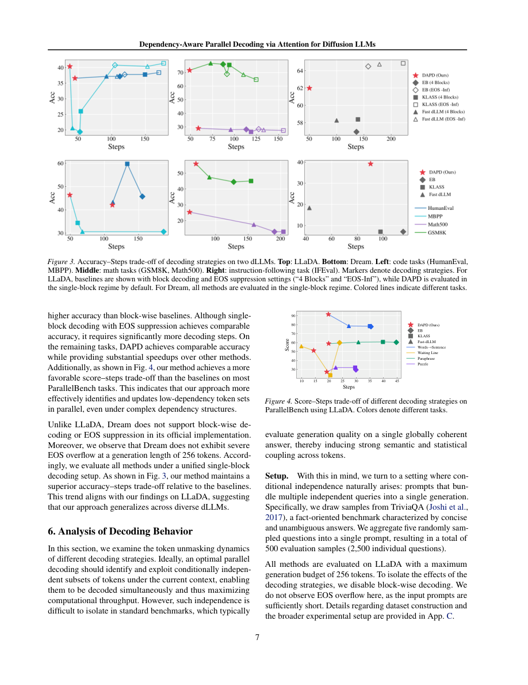

#1
★ 8/10
Dependency-Aware Parallel Decoding via Attention for Diffusion LLMs
基于注意力的依赖感知并行解码用于扩散大语言模型

图 Figure · Page 7 of paper
🎯 无需训练，利用注意力图避免强耦合token同步解码
Training-free parallel decoding for diffusion LLMs using attention to avoid co-updating strongly dependent tokens.
❓ Problem · 解决什么问题
扩散大语言模型（dLLMs）在生成文本时，每一步去噪只能得到每个token的独立概率分布，但同时解码多个token时，token之间存在相互依赖关系。如果忽略这些依赖关系强行并行解码，会导致生成质量下降。现有方法要么需要额外训练辅助模型，要么无法有效识别哪些token之间存在强关联。
Diffusion LLMs (dLLMs) generate text by iteratively unmasking tokens, but each denoising step only provides independent per-token probability distributions. When multiple tokens are unmasked in parallel, their mutual dependencies are ignored, degrading output quality. Existing approaches either require retraining auxiliary models or fail to identify which token pairs are strongly coupled and should not be updated simultaneously.
⚙️ Method · 方法
DAPD 方法利用模型自身的自注意力权重，在每次迭代中构建一个有条件依赖图，图中的边代表两个被遮蔽token之间存在强依赖关系。算法在该图上寻找一个"独立集"——即一组彼此之间没有强依赖边的token，然后只对这组token进行并行解码。这样既保留了并行加速的优势，又避免了强耦合token被同时更新所带来的误差传播。整个过程完全无需额外训练或辅助模型。
DAPD leverages the model's own self-attention weights to construct a conditional dependency graph over all currently masked tokens at each decoding iteration. Edges in the graph represent strong inter-token dependencies, while absent edges indicate weak coupling. The algorithm then selects an independent set on this graph — a subset of tokens with no strong mutual dependencies — and unmasks only those tokens in parallel. This approach requires no retraining or auxiliary models, making it plug-and-play on top of existing dLLMs like LLaDA and Dream.
📐 Key Formulas · 关键公式
\[G_t = (V_t, E_t), \quad E_t = \{(i,j) : A_{ij}^{(t)} > \tau\}\]
💡 依赖图的构建方式：节点集合为当前所有被遮蔽的token，若两个token之间的自注意力权重超过阈值τ，则在它们之间连一条边，表示强依赖关系。
The dependency graph G at step t is built over masked tokens V_t; an edge is drawn between tokens i and j if their mutual self-attention weight exceeds threshold τ, indicating strong inter-token dependency.
\[S_t = \text{IndependentSet}(G_t)\]
💡 并行解码的token集合 S_t 是依赖图上的一个独立集，即集合中任意两个token之间均不存在强依赖边，从而可以安全地同步解码。
The set of tokens S_t selected for parallel unmasking is an independent set of the dependency graph, ensuring no two simultaneously decoded tokens share a strong dependency edge.
📊 Results · 结果
在 LLaDA 和 Dream 两个扩散大语言模型上的实验表明，DAPD 在相同解码步数下相比现有并行解码方法显著提升了准确率，改善了"准确率-步数"的权衡曲线。DAPD 还实现了更全局分散的并行更新，更充分地利用了 dLLMs 任意顺序生成的能力，而不是像传统方法那样集中更新局部相邻token。论文报告了在多个基准任务上的一致性提升，具体数字因任务而异，整体上在减少解码步数的同时维持或提高了生成质量。
Experiments on LLaDA and Dream demonstrate that DAPD consistently improves the accuracy-steps trade-off compared to existing parallel decoding baselines. DAPD produces more globally distributed parallel updates across the sequence, better exploiting the any-order generation capability inherent to dLLMs. Across multiple benchmark tasks, DAPD achieves higher accuracy at the same number of decoding steps, or equivalently reaches target accuracy with fewer steps than competing methods — all without any additional training overhead.
🌟 Why It Matters · 为什么重要
扩散语言模型是自回归模型之外一条极具潜力的生成路线，但其推理速度长期受限于串行解码。DAPD 提供了一种即插即用的加速方案，有望降低 dLLMs 的部署成本，推动其在实际应用中的落地。
Diffusion LLMs represent a promising alternative to autoregressive models, but their inference speed has been a key bottleneck. DAPD offers a plug-and-play acceleration strategy that could significantly lower the deployment cost of dLLMs, making them more competitive with autoregressive counterparts in real-world applications.